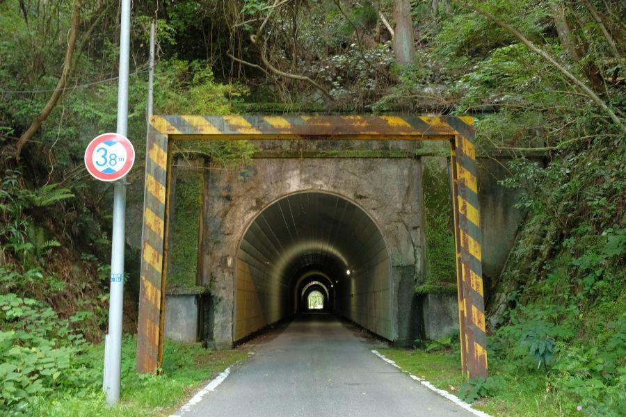
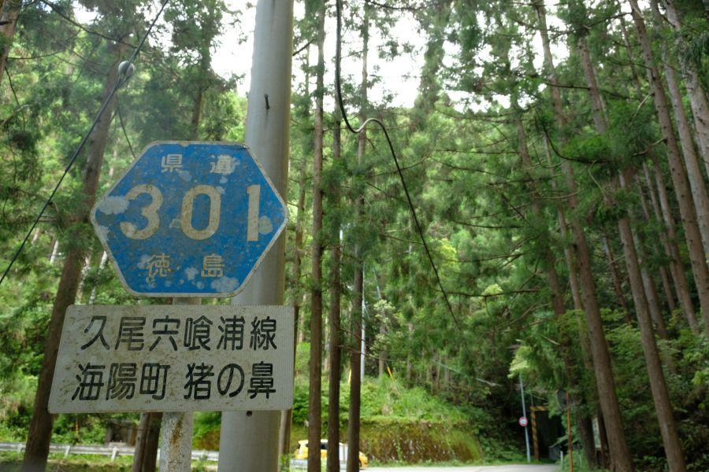
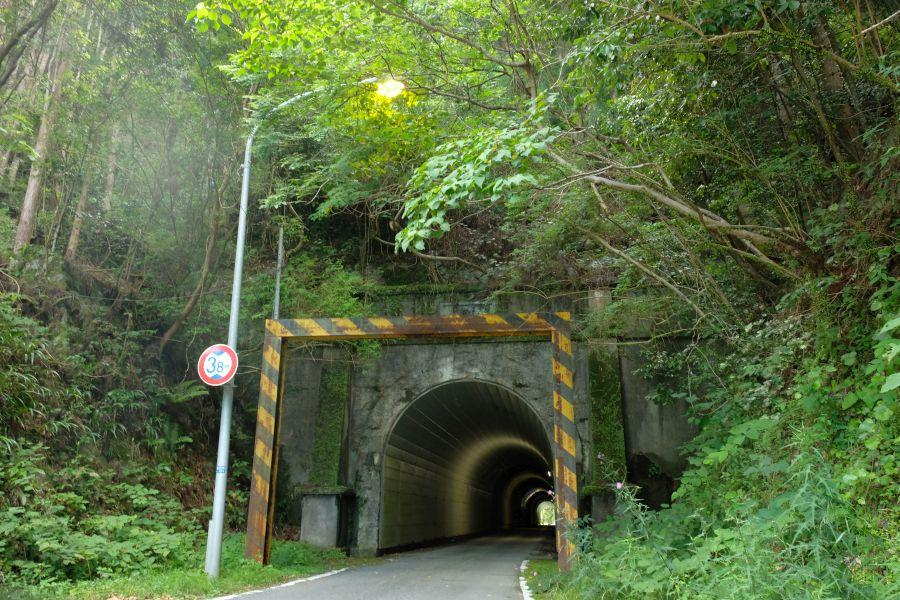
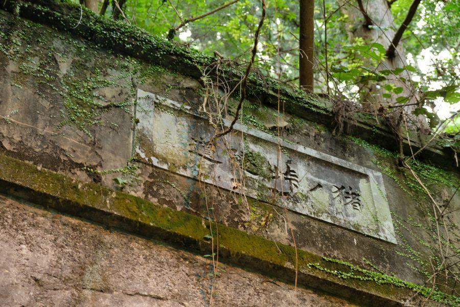
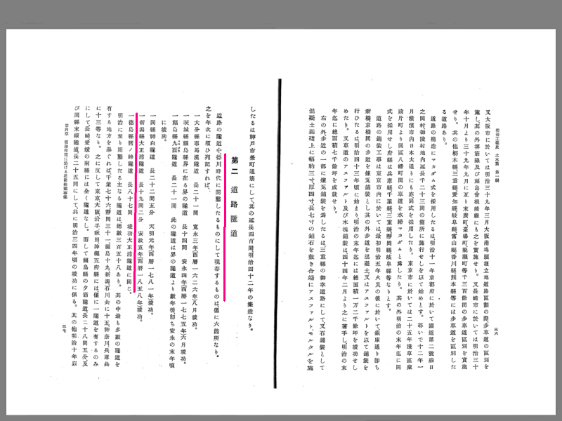
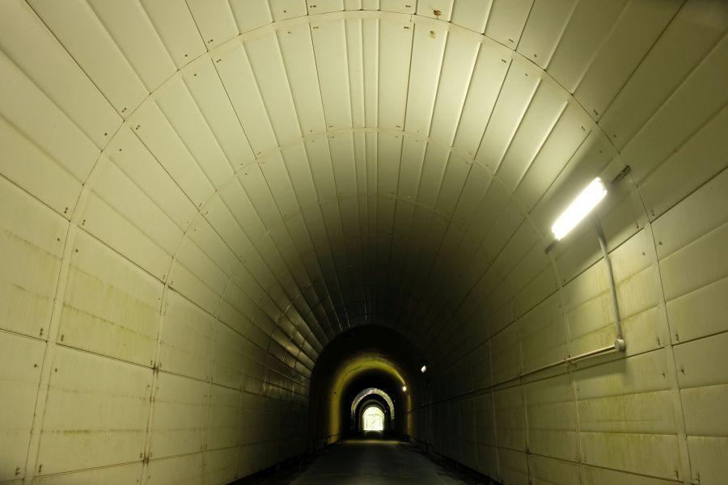
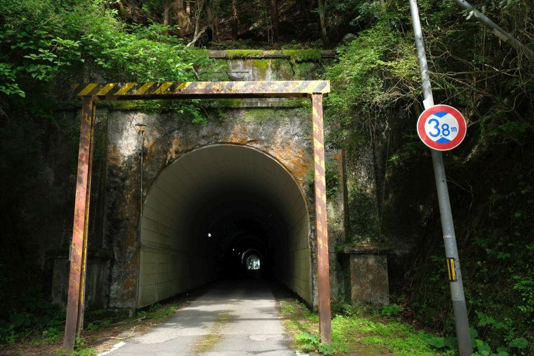
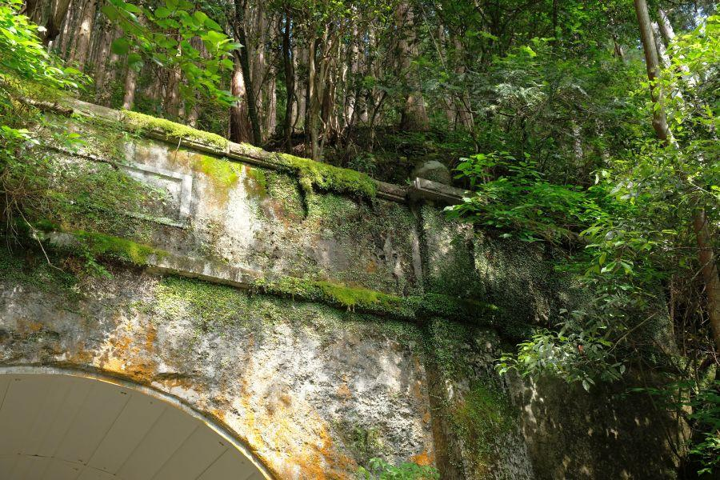
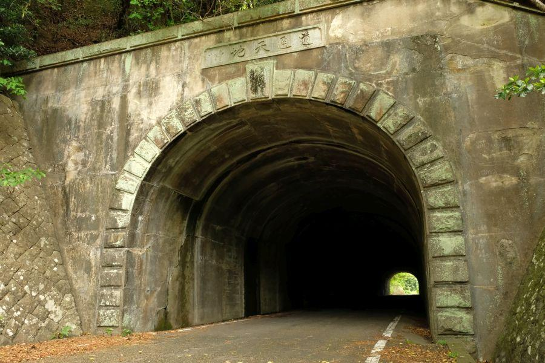
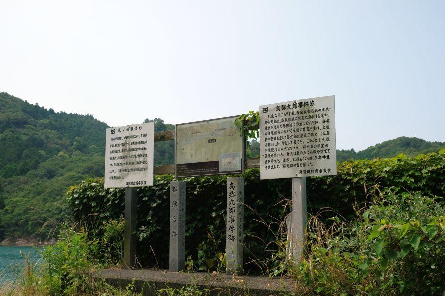

前身は徳川時代？山中の古トンネル < 猪ノ垰隧道 / 徳島県海陽町 >

山がちな四国には新旧長短様々な隧道(ずいどう、トンネル)が存在します。
少し古さと装飾の美しさを感じさせるこちらのトンネルがある場所は、徳島県南部・海陽町。交通量が少ない山中に存在したからこそ ひっそり佇むことを許された古トンネルは、実は相当な歴史を秘めています。
徳島県山中に存在する古トンネル

そのトンネルがある場所は徳島県海陽町。旧宍喰町の町域なので、徳島県最南部かつ高知県との県境に接する場所。
トンネルを越えたら高知県なのかな？ と思ったら、それは違いました。
県道指定を受けている道ですが 所々狭小区間が存在するので、来られる際は バイクか軽自動車等の小型四輪をお勧めします。

トンネル前後に鉄製のゲートあり。
制限されているのは高さ3.8mだけですが、幅員も決して十分余裕があるわけではありません。とは言え普通車一台が通過する分には 問題ありません。
造形に凝った猪ノ垰隧道

猪ノ垰隧道(いのたおずいどう / 徳島県海陽町)
壁柱
迫石
帯石
笠石
扁額
内部は鉄板巻きで補強
総コンクリート造りながら、非常に凝った造形。特に迫り出した壁柱が目を惹きます。

猪ノ垰隧道 ※右から
左隅に「昭和5年」と記されているように見えますが、トンネルの諸元が記載されている土木デジタルアーカイブスを参考にすると、
起工 : 昭和5年2月24日
竣工 : 昭和6年6月15日
着工から完成まで約1年4ヶ月を要しました。
昭和6年6月は、東京の御茶ノ水橋が供用されたのと同じ年月。どちらも現役です。
昭和6年(1931)としても今から88年前であり 相当な古さですが、実はこの場所のトンネル、それよりも古い時代から存在していた可能性があります。
德川時代からトンネルがあった可能性

昭和4年(1929)に発刊された 明治工業史 土木編
↓
第一編「道路」
↓
第十節 特種工事
↓
第二 道路隧道
の項目に、
*「德川時代に開鑿したるものにして現存するものは、僅に六箇所なり。」
*「一德嶋縣猪ノ峠隧道 長八十七間 竣功大正浦隧道に同じ。」
とあります。
長八十七間＝約156.6m ※一間約1.8m
現トンネルの161.8mと比べると僅かに短いものの、壁柱の迫り出し等を考えると、誤差の範囲と言って良いもの。
徳島県も広く、「猪」がつくトンネルとしては、古くから街道として栄えていた「猪之鼻隧道」がありますが、そちらは延長が827mあるので長さが全然一致しません。史料に記されているトンネルは、海陽町の猪ノ垰隧道と同定して良さそうです。
もっとも、徳川時代にコンクリート工法は確立されていなかったでしょうから、
その時代から存在した旧トンネルに改修を加えて、現トンネルになった
元々あったトンネルを埋めて、近いこの場所に現トンネルを掘った
・
・
・
猪ノ垰隧道が開削されたと記録されている安政5年(1858)は、安政の五か国条約こと「日米通商修好条約」の調印及び、それに反対する者を 井伊直弼が粛清した「安政の大獄」が発生した年。いわゆる幕末動乱の時代ですが、同年に四国の阿波のこんな山奥で、土木史に列記されるほどの近代道路工事が行われていたことに、驚きを隠せません。
今から161年も前の話です。
補強が施されているトンネル内部

内部へ進入してみます。
白く塗装された鉄板に巻かれたトンネル内部は 電灯と伴って明るく、古トンネルにありがちな 不気味な雰囲気はありません。
鉄板巻きは 竣工当時には記録されていないので、後年補強のため行われたものです。
西側坑門の特徴

西側の坑門に出てきました。
東側と同じく高さ制限のゲートと、坑門の造形も全く同じ。西側で陽が良く当たるのか、東側坑門より 少し乾いた、そして焼けた印象を受けます。

扁額こそ苔に覆われて判別できないものの、両壁柱の上に丸い石が一対乗せられていることを確認。上がって確認することはできなかったのですが、これは細部まで造形にこだわったということでしょう。
後程 東側坑門へ引き返してみると、同じように壁柱の上にも玉石が乗せられていましたが、そちらは石を苔が覆っていて ぱっと見では目に入らない感じでした。
猪ノ垰隧道
< 自家用車 >
高松駅から 約3時間15分、162km
徳島阿波おどり空港から 約2時間30分、104km
※ 主な地点からの最速・最短距離
関連・近隣記事
2018,12/26 国の将来を憂い殉じた二十三名の志士たちの墓所 < 二十三士墓所・福田寺 / 高知県田野町 >

2019,6/30 日本最古のコンクリート製トンネル < 松坂隧道 / 徳島県牟岐町 >

2019,7/6 江戸を東京と改めた男の最期の地 < 江藤新平遭厄記念碑 / 高知県東洋町 >
